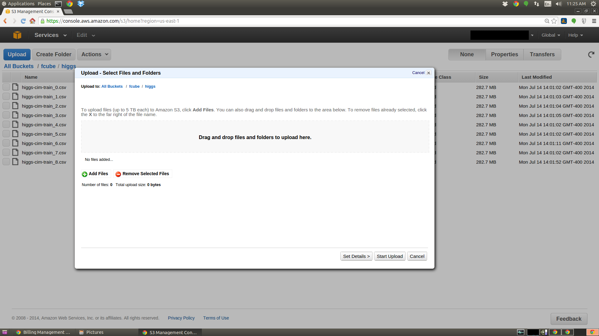

FCUBE
How to add a dataset
If your training dataset is bigger than 1GB, we recommend to generate splits. This will reduce network transfers (and cost) and will result in better overall performance of the FCUBE platform. If your dataset is smaller than 1GB, you can skip Step 1.
Step 1: generate splits (optional)
FCUBE provides functionality to generate splits that maintain the class balance of the problem. The path to the dataset and the number of splits must be specified. Example:
$ java -jar fcube.jar -split higgs-alfa.csv 10Step 2: upload data
Datasets can be directly uploaded to Amazon S3. Access your AWS account from aws.amazon.com
.
Amazon AWS S3 management console provides a user-friendly interface to navigate through your S3 buckets and folders. It also provides drag-and-drop functionality to upload datasets:
